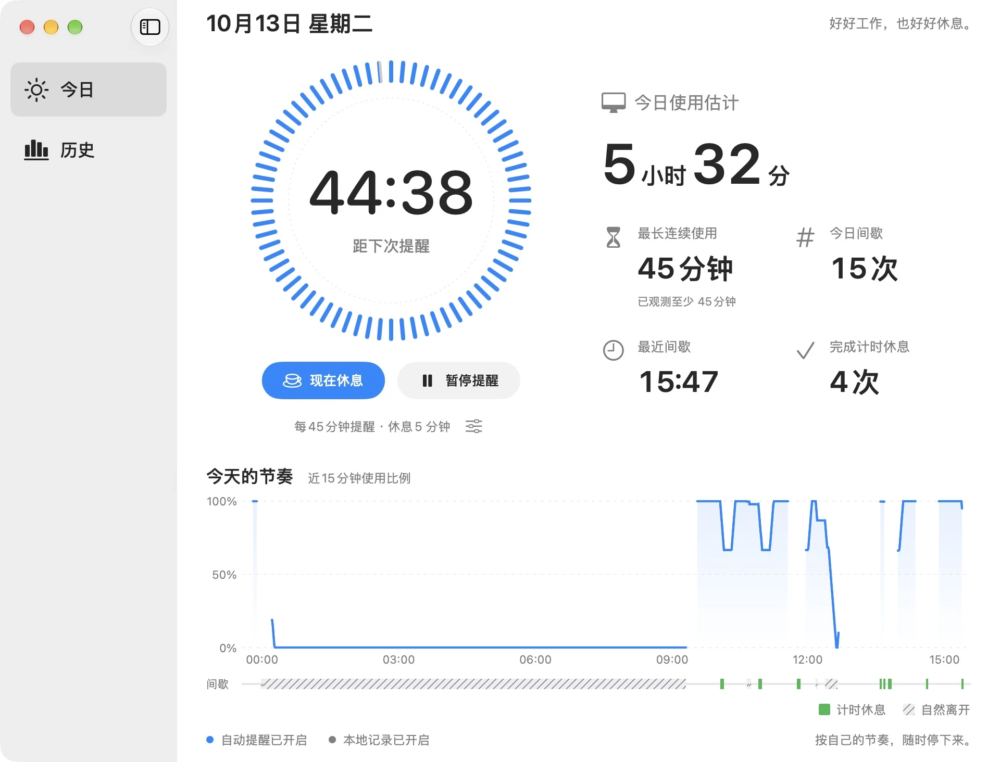
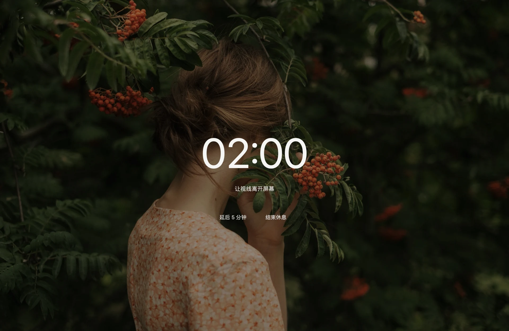

免费
0从日常提醒开始
- 自动与手动休息提醒
- 间隔与时长设置、暂停与延后
- 免打扰时段与 Focus 过滤条件
- 今日、所有月份的月统计
- 最近七天日周明细、记录导出与删除
为 Mac 而做的休息提醒
让菜单栏里的一点提醒，为专注留出间息。按自己的节奏设置提醒，把目光从屏幕上移开片刻。
看看间息如何工作Mac App Store 上架准备中
Apple silicon · macOS 15 或更新版本

真实应用画面。简单的提醒，看得见的节奏。 查看原图 ↗
01 / 功能
设定提醒间隔与休息时长。全屏休息或系统通知，暂停、延后、提前结束，都由你决定。
免打扰时段与 Focus 过滤条件免费使用。Pro 还可避让忙碌日历和指定前台应用。
今日、月热力图与趋势免费查看；日周明细免费回看最近七天。使用估计只反映已观测的时段。

默认磨砂休息画面覆盖可用显示器。Pro 可换成自己的图片和提示文字。
02 / 免费与 Pro
从日常提醒开始
一次购买，不自动续费
中国大陆参考价格。其他地区以应用内 Apple 显示的当地价格为准。
购买与恢复购买通过 Apple 处理。月统计无需购买 Pro。
03 / 隐私
历史记录仅保存在本机。间息不上传活动数据、不读取屏幕内容，也没有广告或分析 SDK。记录可以关闭，已有历史可以导出或删除。
了解隐私政策 ↗提醒、历史或购买遇到问题，可以先查看使用说明，或直接联系支持。